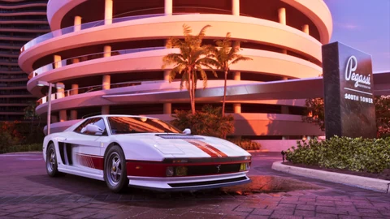

Deportivos
Grotti Cheetah ’95
Grotti Cheetah ’95 en GTA VI: deportivos. Inspiración: Ferrari Testarossa y 512 BB. Nombrado por Rockstar.
 ’95 Grotti Cheetah 01
’95 Grotti Cheetah 01Imágenes oficiales © Rockstar Games / Take-Two Interactive. Origen y créditos.
Lo que hay que saber
Rockstar da nombre al Cheetah ’95 en el catálogo de la edición Ultimate, y nuestras cuatro capturas oficiales muestran la carrocería blanca con franjas rojas, el interior de cuero rojo, las llantas de cinco radios y el monograma en la zaga. El Ferrari Testarossa cuyos códigos retoma se convirtió, para toda una generación, en la imagen misma de Miami: sus rejillas laterales y sus proporciones desmesuradas hicieron más por el imaginario de la ciudad que cualquier campaña turística.
Ficha rápida
El Grotti Cheetah ’95 es un vehículo de la categoría deportivos registrado en Leonidakit. El nombre es oficial, publicado por el propio estudio. En esta ficha, solo la inspiración real sigue siendo una interpretación de la comunidad. Forma parte de los vehículos presentados con la edición Ultimate, una presentación que nombra los modelos. Su modelo real es europeo, un origen que la saga suele reservar a los coches de prestigio y deportivos. Está vinculado a la edición Ultimate del juego.
Las cifras llegarán el 19 de noviembre de 2026: precio, velocidad punta, aceleración, capacidad y puntos de venta, medidos en el juego.
El modelo real
La comparación elegida para este vehículo es con el Ferrari Testarossa y el 512 BB. El estudio no usa licencias ni nombra referencias. Esta comparación es una deducción sacada de las imágenes.
En la saga, este tipo de vehículo
Los deportivos de la saga ocupan el hueco entre la berlina y el superdeportivo: más vivos, más bajos, a menudo de dos puertas, sin el precio de los modelos de excepción.
Identidad
| Modelo | Cheetah ’95 |
|---|---|
| Fabricante | Grotti |
| Estado | Nombrado por Rockstar |
| Categoría | Deportivos |
| Inspiración real | Ferrari Testarossa y 512 BB (comparación de la comunidad) |
| Origen del modelo | Modelo europeo |
| Disponibilidad | Exclusivo de la edición Ultimate |
| Fuente | Edición Ultimate |
Ficha documental
Lo que aún no se ha publicado conserva su estado: no se inventa nada, y los costes de uso no son mecánicas confirmadas.
Cómo se consigue
- Precio
- Precio próximamente
- Comprable
- Compra por confirmar
- Cómo se consigue
- De regalo con la edición UltimateOficial
- Dónde encontrarlo
- Ubicación próximamente
Rendimiento
- Aceleración
- Por confirmar
- Velocidad máxima
- Por confirmarUna velocidad máxima no es una velocidad de trayecto.
- Frenada
- Por confirmar
- Manejo
- Por confirmar
Capacidades
- Plazas
- Por confirmar
- Terreno
- carreteraEstimadoDeducido del tipo de vehículo (categoría del sitio), no de una ficha técnica.
- Carga
- Por confirmar
Costes de uso
- Combustible
- Combustible: mecánica no confirmadaUn indicador visto en un tráiler no demuestra ni un precio, ni un consumo, ni un coste de uso.
- Mantenimiento
- Mantenimiento: mecánica no confirmadaNo se ha anunciado ningún coste de mantenimiento de vehículos para GTA VI.
- Reparaciones
- Reparaciones: mecánica no confirmadaLas reparaciones de pago de GTA V no demuestran nada para GTA VI.
- Seguro
- Seguro: mecánica no confirmadaNo se ha anunciado ningún seguro de vehículos para GTA VI.
- Reventa
- Reventa: mecánica no confirmadaUna reventa solo cuenta si es posible y si su precio se conoce o se elige como hipótesis. Nunca reduce el dinero que hay que pagar hoy.
En el mapa de Leonida
Nuestro mapa ya sitúa los concesionarios, el taller y el circuito. Los puntos de aparición exactos llegarán con el juego.


Deportivos
Cheetah ’95
Dónde encontrarlo: de regalo con la edición Ultimate; ubicación en el juego por anunciar
Lugares relacionados con los deportivos en nuestro mapa (no es una ubicación confirmada para este vehículo): Vapid Dealership, Baller Dealership, Marlin Motors, Status Auto Resort, Rideout Customs, Chip’s Body Shop, Watkins Auto Parts, Ambrosia Raceway Park.
Lugares relacionados en nuestro mapa
- Vapid DealershipConcesionarios · SouthsideVer en el mapa
- Baller DealershipConcesionarios · SouthsideVer en el mapa
- Marlin MotorsConcesionarios · SouthsideVer en el mapa
- Status Auto ResortConcesionarios · CrosstownVer en el mapa
- Rideout CustomsTalleres · CrosstownVer en el mapa
- Chip’s Body ShopTalleres · Key LentoVer en el mapa
- Watkins Auto PartsTalleres · Port GellhornVer en el mapa
- Ambrosia Raceway ParkAeródromos y circuitoVer en el mapa
¿Un error en esta ficha? Cada modelo real citado es una deducción sacada de las imágenes oficiales. El estudio no confirma nada y no usamos ningún contenido robado. Si tienes una corrección, la página Contacto está para eso.